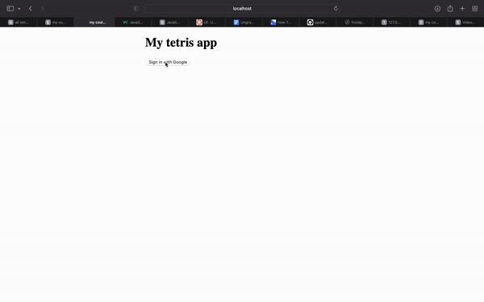
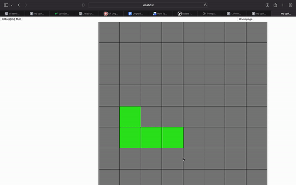

FP2 Writeup
Overview
For my final project, I have made an online tetris game. Players are able to sign in with google to view statistics about their gameplay. The game can be found here.
I ran out of time to implement a rotate feature for my tetris blocks. I have 7 different possible block types, and the only viable solution I found for rotating blocks was to manually track each type of block that spawns and also to track what type of rotation it would do next. This would require 7*4 different cases for modifying the users current block, and this would require at least a few hundred lines of code which felt really demoralizing. There is probably a more clever solution to doing this, since some of the different block types are just inverses of eachother (see here), but i was unable to think of a better solution!
Process
My process was kind of all over the place for the final, as I was mostly adding finishing touches from the FP1. For FP1, I succeeded in adding data to firestore but I still had to query the database for user information. This was necessary for the sign in view page, where players are able to view how many blocks they've stacked, and also so they can view the top players table. Another hurdle I faced was trying to figure out how to output multiple html files within a deployed instance of Vite. For FP1 I was only able to succeed in this by having separate repositories for my game and also for my sign in page. However I was able to do this by specifying multiple input files for rollupOptions in vite.config.js.
I added a feature that creates a button once a game finishes to prompt the user if they want to play another game, and I also displayed how many blocks they were able to stack in their game. To do this, I shifted the gameboard towards the middle of the screen to allow margin space for the button to be placed.
Issue Deep Dive
I will be discussing the bug shown above. I wanted to implement a rotate feature so users could be able to rotate their block. To do this, I created an array that stored different types of blocks, and when a new block needs to be generated I would randomly grab a block from the object. I have an object that keeps track of the block the user is currently playing with, and I would just set it equal to one of the randomly selected block types. Because I was using an = for assigning, this made my current block object become a reference to my block type object, so when I modified the current block it would also modify the block type object.
I spent like 3 hours debugging this because I wasn't aware that this is a property of javascript. It might be a property of other programming languages as well and maybe i just forgot about it? To find out this was the bug I was printing out all my different game state variables at various times throughout my code, and I discovered that when I generated the first block at the start of the game, the block type object was also modified. The repository for my game can be found here
Ideas & Future
- Finish the implementation for rotating blocks
- Add some styling to the pages
- Include more statistics & metrics about users' gameplay
Kudos
The firebase activities in the class repo were really helpful for my development process, thank you!